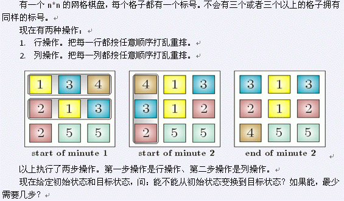

第一行一个数t(t<=200)，表示测试数据的组数。每一组第一行一个数n(n<=200)，表示棋盘的大小。接下来n行，每行n个数，第i行第j列一个数a[i,j]表示初始棋盘中的每一个数。再接下来n行，每行n个数，第i行第j列一个数b[i,j]表示目标棋盘中的每一个数。其中a[i,j],b[i,j]<=n*n。

第一行一个数t(t<=200)，表示测试数据的组数。每一组第一行一个数n(n<=200)，表示棋盘的大小。接下来n行，每行n个数，第i行第j列一个数a[i,j]表示初始棋盘中的每一个数。再接下来n行，每行n个数，第i行第j列一个数b[i,j]表示目标棋盘中的每一个数。其中a[i,j],b[i,j]<=n*n。
对于每组数据，你都要输出一个最小的变换次数，若初始状态不能变换到目标状态则输出”no”。
10
3
5 5 6
3 2 4
7 2 1
2 4 2
5 1 6
5 7 3
3
3 3 5
6 2 1
1 6 9
3 1 3
5 6 1
2 6 9
3
7 8 3
8 5 5
3 4 1
1 7 3
8 8 4
5 5 3
3
4 2 6
8 1 4
8 1 3
2 3 4
4 6 8
1 1 8
3
2 7 1
3 2 5
8 8 9
5 8 8
1 9 2
2 7 3
3
7 8 3
3 6 2
2 1 6
2 6 8
1 2 6
7 3 3
3
2 8 3
7 2 8
6 5 4
8 7 6
5 2 4
2 3 8
3
1 6 8
9 8 1
3 3 5
8 1 9
8 6 1
3 3 5
3
7 9 4
9 7 1
2 2 4
2 7 4
1 9 4
7 9 2
3
6 2 2
8 6 1
7 3 5
2 6 6
7 2 3
1 8 5
3
2
3
2
3
2
3
2
3
3
数据范围：测试点 t n 时限 1 t=10 n=3 1s 2 t=10 n<=10 1s 3 t=50 n<=10 1s 4-5 t=200 n<=100 2s 6-7 t=200 n<=200 7s 8-10 t=200 n=200 15s